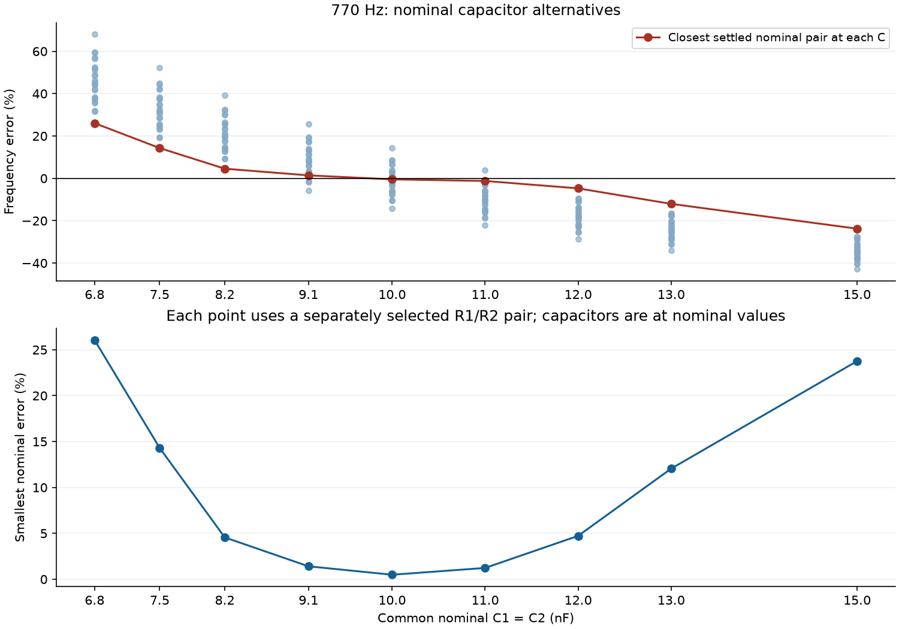
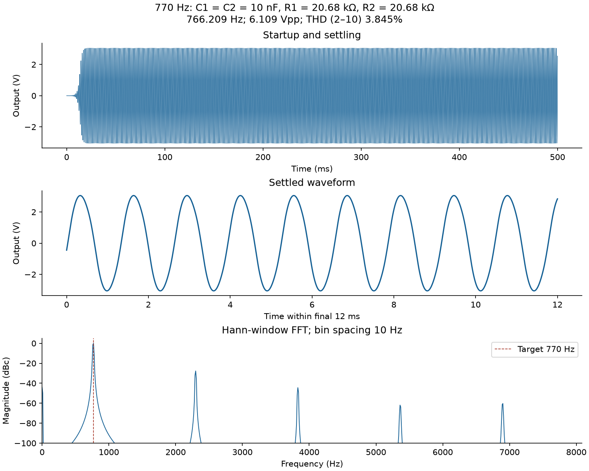
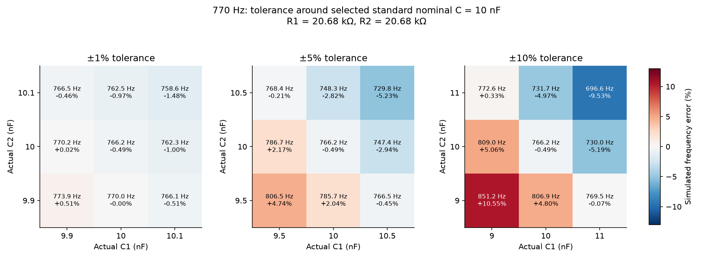
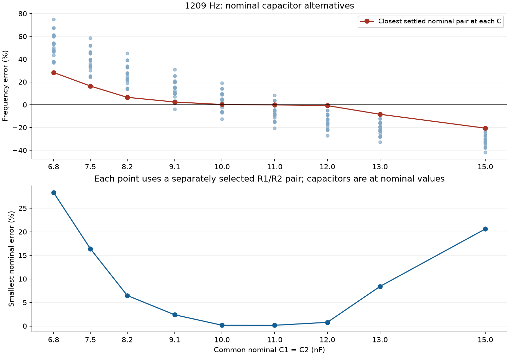
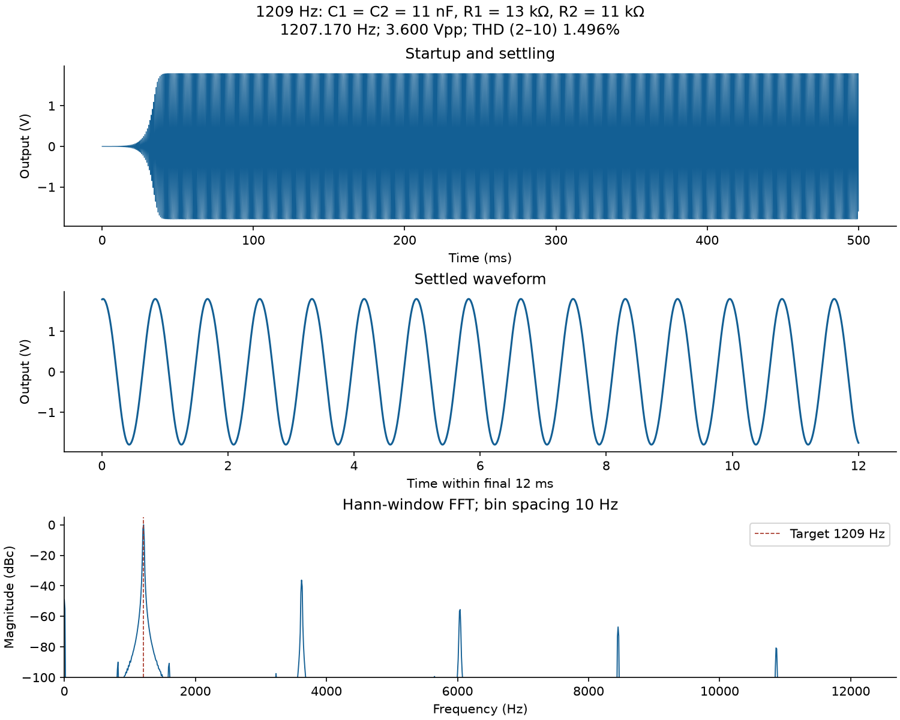
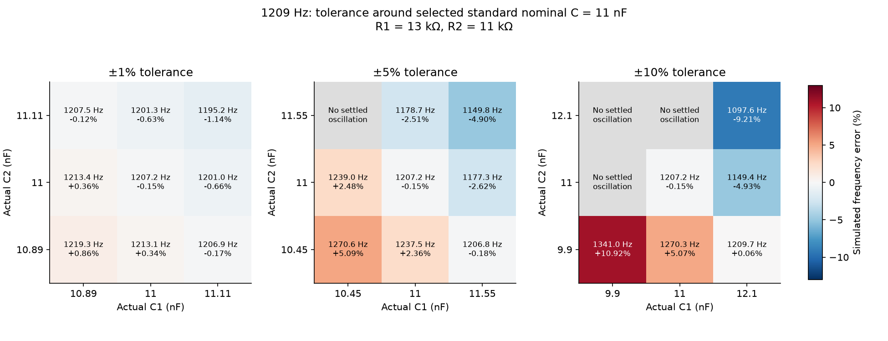

12,150 scenario rows; 11,150 unique physical circuits. The original circuit and resistor grids are retained.
Full interpretation · Tolerance comparison CSV
Selections use nominal capacitor values. ±1%, ±5%, and ±10% tolerance points are separate tests.
All simulation rows · Nominal ranking · Best pair at each nominal C
| C nF | R1 Ω | R2 Ω | Simulated Hz | Error % | THD % |
|---|---|---|---|---|---|
| 6.8 | 24000 | 24000 | 970.6154 | 26.0539 | 3.843 |
| 7.5 | 24000 | 24000 | 880.1423 | 14.3042 | 3.844 |
| 8.2 | 24000 | 24000 | 805.0971 | 4.5581 | 3.846 |
| 9.1 | 20680 | 24000 | 780.8575 | 1.4101 | 4.230 |
| 10 | 20680 | 20680 | 766.2090 | 0.4923 | 3.845 |
| 11 | 20000 | 18000 | 760.5097 | 1.2325 | 2.698 |
| 12 | 18000 | 18000 | 733.6086 | 4.7262 | 3.846 |
| 13 | 18000 | 18000 | 677.2325 | 12.0477 | 3.847 |
| 15 | 18000 | 18000 | 587.0108 | 23.7648 | 3.848 |
Closest nominal selection:
{
"case_id": "f770_6b69db58e492",
"target_hz": 770,
"C_nominal_f": 1e-08,
"C_nominal_nF": 10.0,
"C_nominal_value_series": "E12/E24",
"R1_ohm": 20680.0,
"R2_ohm": 20680.0,
"R1_parts_ohm": "20000 + 680",
"R2_parts_ohm": "20000 + 680",
"resistor_count": 4,
"theory_zero_phase_hz": 769.6080420304418,
"simulated_frequency_hz": 766.2089902806756,
"simulated_abs_error_percent": 0.4923389245875835,
"steady_state_vpp_v": 6.109304784557489,
"thd_2_to_10_percent": 3.8454947797423737,
"settling_time_s": 0.02,
"oscillation_status": "settled_oscillation"
}



All simulation rows · Nominal ranking · Best pair at each nominal C
| C nF | R1 Ω | R2 Ω | Simulated Hz | Error % | THD % |
|---|---|---|---|---|---|
| 6.8 | 15000 | 15000 | 1551.6242 | 28.3395 | 3.835 |
| 7.5 | 15000 | 15000 | 1407.1132 | 16.3865 | 3.837 |
| 8.2 | 15000 | 15000 | 1287.2283 | 6.4705 | 3.838 |
| 9.1 | 13150 | 15000 | 1237.8198 | 2.3838 | 4.232 |
| 10 | 13000 | 13150 | 1210.9206 | 0.1589 | 3.913 |
| 11 | 13000 | 11000 | 1207.1703 | 0.1513 | 1.496 |
| 12 | 11000 | 11000 | 1199.6191 | 0.7759 | 3.840 |
| 13 | 11000 | 11000 | 1107.4936 | 8.3959 | 3.841 |
| 15 | 11000 | 11000 | 960.0398 | 20.5922 | 3.843 |
Closest nominal selection:
{
"case_id": "f1209_ab752848af9c",
"target_hz": 1209,
"C_nominal_f": 1.1000000000000001e-08,
"C_nominal_nF": 11.0,
"C_nominal_value_series": "E24",
"R1_ohm": 13000.0,
"R2_ohm": 11000.0,
"R1_parts_ohm": "13000",
"R2_parts_ohm": "11000",
"resistor_count": 2,
"theory_zero_phase_hz": 1209.927722852097,
"simulated_frequency_hz": 1207.1703199027884,
"simulated_abs_error_percent": 0.15133830415315316,
"steady_state_vpp_v": 3.600446974477749,
"thd_2_to_10_percent": 1.4957092604716107,
"settling_time_s": 0.04,
"oscillation_status": "settled_oscillation"
}


